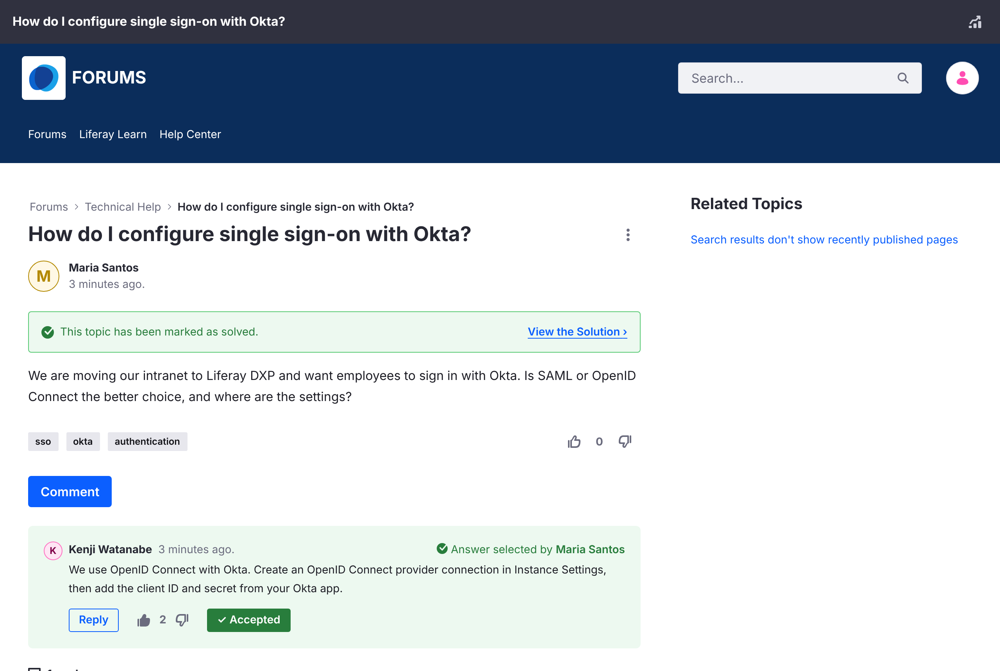

Questions and Answers
A topic posted as a question can be marked as solved by accepting one reply as its answer.

Marking the Answer#
- Open the question.
- Under the reply that solves it, click Mark as Answer.
The reply shows Accepted, the topic shows This topic has been marked as solved. with a View the Solution link, and the topic gets the Solved badge in lists. The home page counts it under Solutions.
- Only one reply can be the accepted answer. To choose another, click Accepted to clear it first.
- Only top-level replies can be accepted, not replies to replies.
- Moderators can mark and clear the answer.
Important
In Liferay Forums 1.0.0, the question's author also sees Mark as Answer, but can't use it yet. See Known Issues.